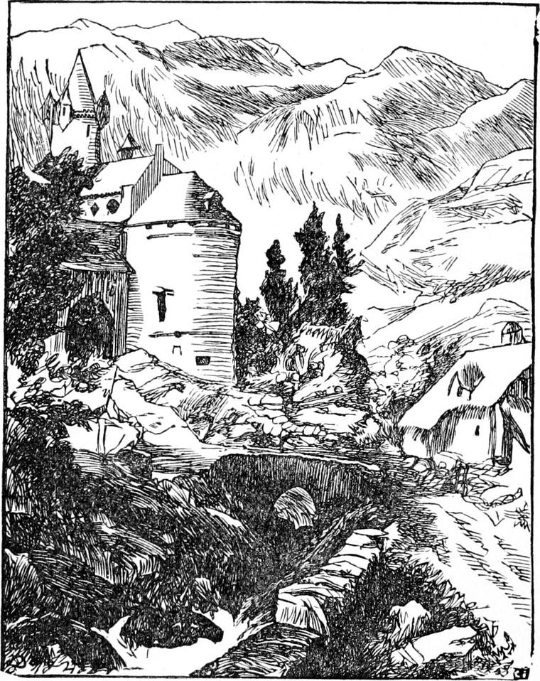
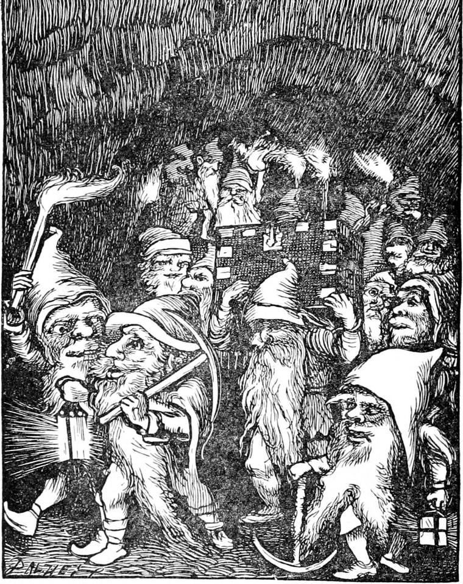

There was once a little princess whose father was king over a great country full of mountains and valleys. His palace was built upon one of the mountains, and was very grand and beautiful. The princess, whose name was Irene, was born there, but she was sent soon after her birth, because her mother was not very strong, to be brought up by country people in a large house, half castle, half farmhouse, on the side of another mountain, about half-way between its base and its peak.
The princess was a sweet little creature, and at the time my story begins was about eight years old, I think, but she got older very fast. Her face was fair and pretty, with eyes like two bits of night sky, each with a star dissolved in the blue. Those eyes you would have thought must have known they came from there, so often were they turned up in that direction. The ceiling of her nursery was blue, with stars in it, as like the sky as they could make it. But I doubt if ever she saw the real sky with the stars in it, for a reason which I had better mention at once.

These mountains were full of hollow places underneath; huge caverns, and winding ways, some with water running through them, and some shining with all colours of the rainbow when a light was taken in. There would not have been much known about them, had there not been mines there, great deep pits, with long galleries and passages running off from them, which had been dug to get at the ore of which the mountains were full. In the course of digging, the miners came upon many of these natural caverns. A few of them had far-off openings out on the side of a mountain, or into a ravine.
Now in these subterranean caverns lived a strange race of beings, called by some gnomes, by some kobolds, by some goblins. There was a legend current in the country that at one time they lived above ground, and were very like other people. But for some reason or other, concerning which there were different legendary theories, the king had laid what they thought too severe taxes upon them, or had required observances of them they did not like, or had begun to treat them with more severity, in some way or other, and impose stricter laws; and the consequence was that they had all disappeared from the face of the country. According to the legend, however, instead of going to some other country, they had all taken refuge in the subterranean caverns, whence they never came out but at night, and then seldom showed themselves in any numbers, and never to many people at once. It was only in the least frequented and most difficult parts of the mountains that they were said to gather even at night in the open air. Those who had caught sight of any of them said that they had greatly altered in the course of generations; and no wonder, seeing they lived away from the sun, in cold and wet and dark places. They were now, not ordinarily ugly, but either absolutely hideous, or ludicrously grotesque both in face and form. There was no invention, they said, of the most lawless imagination expressed by pen or pencil, that could surpass the extravagance of their appearance. But I suspect those who said so had mistaken some of their animal companions for the goblins themselves—of which more by and by. The goblins themselves were not so far removed from the human as such a description would imply. And as they grew misshapen in body they had grown in knowledge and cleverness, and now were able to do things no mortal could see the possibility of. But as they grew in cunning, they grew in mischief, and their great delight was in every way they could think of to annoy the people who lived in the open-air storey above them. They had enough of affection left for each other to preserve them from being absolutely cruel for cruelty's sake to those that came in their way; but still they so heartily cherished the ancestral grudge against those who occupied their former possessions and especially against the descendants of the king who had caused their expulsion, that they sought every opportunity of tormenting them in ways that were as odd as their inventors; and although dwarfed and misshapen, they had strength equal to their cunning. In the process of time they had got a king and a government of their own, whose chief business, beyond their own simple affairs, was to devise trouble for their neighbours. It will now be pretty evident why the little princess had never seen the sky at night. They were much too afraid of the goblins to let her out of the house then, even in company with ever so many attendants; and they had good reason, as we shall see by and by.
